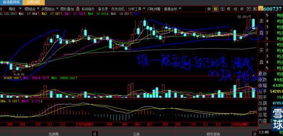

稍微有点中国证券历史知识的人都知道：第一支著名长庄股“600737新疆屯河”。是由纵横证券市场多年的德隆系炮制，唐家兄弟也是中国股票第一代最著名操盘手。虽然他们为此入狱十余年，但他们的操盘手法和资本运作套路一直被作为经典案例广为运用直到今天没有一丝改变。前辈死在沙滩上，一代更比一代强。
姓名 公司职务 经典案例 结局 现状 掌管资产
唐万里 德隆集团董事长 湘火炬 重组、崩盘 1500亿；
唐万平 新疆德隆管工业 新疆屯河 累成植物人 700亿；
唐万川 中企集团管金融 合金投资 收拾残局 800亿；
唐万新 德隆国际总裁 ST中燕大赚 出货毕 德隆灵魂；
我们不谈资本运作方案，只专注他们长庄操盘的手法，这样会很简单且看看人家这些真正的实战派资本精英，对人性的贪婪与恐惧的理解与玩弄，到了何等入木三分淋漓尽致程度。同时，为什么再狡猾的狐狸也有无法隐藏的尾巴会露出来？“要想人不知除非己莫为”的细微秘密何处露出端倪？
看图自己去揣摩吧！
1、面对今天的这样的一张图，我们无法判断未来。虽然我们也看到日线的所有均线系统全部已经由前期的泥潭纠结转变为清晰的多头排列（一叶可知春秋），但是，多头均线却像毫无支撑任由股价打穿。这里只教大家一个技术：下图均线开始多头排列是由前两周股价向上突破形成的，虽然股价又回到原位（其实会比原位高一点），但是均线系统趋势由空转多排列的转换就是这次向上冲击的全部意义所在。
2、并且得到周线的进一步确认（见下周线图，同样得到印证）
3、上图的未来我们不可预知。暂且不管，让未来去诠释。我们来研究历史。下图是600737新疆屯河（现名：中粮屯河）15年前（2000年3月16日）日线图，从这天开始，它开创了中国A股长庄操盘手法之先河，是长庄股操盘师爷级鼻祖。哪怕15年后今天的庄家手法会有略微变异（例如前段时间我极力鼓吹的“浙江龙盛”图型与它相比虽然形态不完全型似但神似，并断言我的粉丝虽然在浙江龙盛14.7元处潜伏购买，在它走到18—20元股价震荡时没有人会拿得住），但基本手法没有丝毫变化，正所谓：太阳底下没有新鲜事，但历史却总是会被忘记。
看看下图是不是与今天的600638新黄浦似曾相识？你身在其中是不是惶惶不可终日？这就是大资金利用人性恐惧的力量。
4、我们再看下图，会发现一个基本规律：无论狐狸多狡猾都有无法隐藏之处。下图所圈之处就是大资金建仓动作，这是任何庄家都无法隐瞒的。大资金所有的买都是为了唯一的目的：卖！是为卖而买。如何卖才是任何一个庄家必须面对的终极问题。
建仓后，大资金一方面必然要策划图形的时空转换形成价格视觉错误（已经在《如何狙击庄股》讲解过），另一方面必然要策划最终完美出局的故事（业绩变化、资产重组、主营转换、资本增强（定向增发）等等），待这些故事基本准备完成后（我们永远无法提前知道剧情，唯一的信息来源就是股价的走势），庄家就要开始工作，股价就要开始运动。下图股价刚刚向上突破很快又打回原形就是庄家开始工作的信号。如果你身在其中，不禁会产生不可遏止的疑问：难道庄家从1999年3月至2000年3月长达1年所有的横盘准备，就为了这1周的向上突破然后出逃（看看成交量有出逃可能和对手盘没有）？就如同600638新黄浦2014年12月9日跌停板成交量也才1535.81万股，全部算是庄家的好了，还不够明牌前十股东中唯一可以卖出的哪一家基金数量，怎么可能是弃庄而逃，你以为庄家跟你一样穷人一个？日线的恐怖使跟庄的大户亦或小散心理已经极度恐怖而崩溃，未来的方向感莫衷一是（看看股吧的哀嚎就知道了）。
5、狐狸的尾巴就在于周线的多头排列初露端倪。就像黎明前的一缕曙光，却只能照亮身处黑暗勇敢者的心，对于追高的大户也好散户也罢，有技术的猎庄者还是无知无畏菜鸟而言，依然还是身处恐怖的黑暗。却很少有人从任何庄家都无法隐藏的周线多头排列发现尾巴的端倪。这也是坐庄者无法隐藏的痛苦之一。

6、两周后股价重回高点（见下图），K线又开始模仿上次的日线走法，给技术派一个明确的“双头”清晰图案（所以说半瓶子技术越好死的越快），这里对真正的高手来说，会明显感觉“日线双头”的局部图型过小，这种日线双头如果成立的话与长达2年的大图型怎么看都不匹配。这就是半瓶子与真正高手区别的根本所在：大格局与小技术的本质区别。
7、股价随后连续拔高几天，趋势如同拨云见日，走势此时完全明朗化。
8、开弓就没有回头箭。半年后，股价一骑绝尘。再回头看，下图所圈之处就是最开始日线图位置，还感觉那个地方可怕吗？你说不怕？啊呸，那是你事后诸葛亮，没有身处其中怎么可能有“感同身受”的恐惧？
9、下图建仓历史最低价8.8元，双头处20.2元，垂直距离价差11.4元，目标价的量度升幅对于长庄股而言应该等于20.2元位置加上两个量度价差=43元（即使极端爆庄股也不会超过3个量度升幅），半年后股价真的达到可见的46元（复权会更高一点点）。
10、由上解析可知，猎庄是一件多么艰难的事！这个世界还有比赚钱更难的事么？你的心智、你的忍耐、你的灵魂做好准备了吗？如果每个人都能做到，庄家早死光光了。虽然说，出来混的总要还的（唐家兄弟就为此深陷牢狱十余年）庄家就是为死而生，但是他们精心设计并赋予实施的惊心动魄过程是何等伟大而壮丽！
不是吗？
 |
A股最著名长庄横盘股鼻祖操盘解析600737新疆屯河（中粮屯河）炒的是心 2014-12-23 15:10:41 |
Copyright © 1996-2014 SINA Corporation All Rights Reserved.